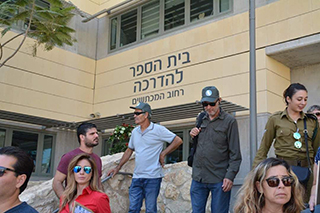
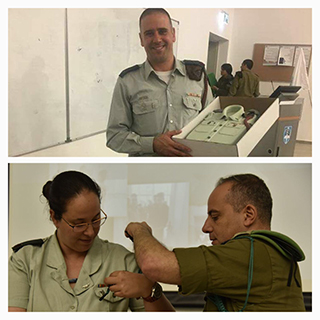
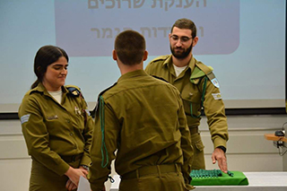
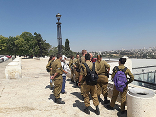
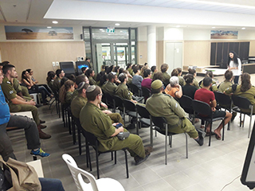
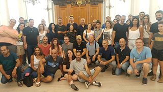
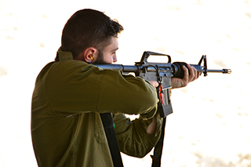

מפקדים וחיילים יקרים, אני מתכבד להציג בפניכם בניוזלטר זה את עיקרי העשייה של ענף הדרכה בקריית ההדרכה. שנת 2017 התאפיינה עד
כה בטיוב ומיצוב תהליכי הדרכה בקריית ההדרכה והובלה של עבודות מטה המשפיעות באופן ישיר על ההכשרות (עמ״ט הטב״ס,
קיצור ההכשרות, פיתוח וחדשנות בלמידה וכיוב׳). כאמור מוצגים לפניכם נושאים מרכזיים בלבד במטרה לשתף אתכם בתהליכים
המרכזיים המתרחשים בענף. נשמח לקבל כל הערה או התייחסות רלוונטית מצידכם.
לשימושכם,
בברכה,
סא״ל איציק ביטון רע״ן הדרכה,
קריית ההדרכה.

יום ההורים של סגל ביה"ס
פעילות לא שגרתית התקיימה בביה"ס לפיקוד והדרכה בסוף חודש אוגוסט. משפחות אנשי הסגל של ביה"ס הגיעו לביקור בזק בקריית ההדרכה.
סיור מודרך ברחבי הקריה, שיחות עם מפקד ביה"ס וראש ענף ההדרכה, הסבר על קריית ההדרכה, ביקור בכיתות ומגורים,
ארוחת הצהריים המשותפת בחדר אוכל אלה רק חלק מהפעילויות שחיכו למשפחות במהלך המפגש המרגש.

החלפת מפקדים בביה"ס לפיקוד והדרכה
חילופי משמרות בצמרת הפיקוד של ביה"ס. רס''ן קובי אסולין, מפקד ביה"ס הראשון, סיים את תפקידו לאחר כשלוש שנים וממשיך לתפקידו
הבא בחיל הרפואה. את הפיקוד על ביה"ס קיבלה רס''ן לירון יצחקי לוזון, אשר שימשה בתפקידה האחרון כמפקדת גפ''ה
בביסל''ח. רס''ן קובי אסולין אמר נאום הפרידה שלו בטקס ההחלפה כי ''תחושת חלוציות אמיתית בהיותי מעשרת המשרתים
הראשונים במקום המופלא בצה"ל שנקרא קריית ההדרכה- מפעל לאומי מדהים בפני עצמו!''. בהצלחה לשני הקצינים!

איחוד מסגרות בביה"ס לפיקוד והדרכה
לאחרונה הוחלט על איחוד שתי מסגרות הכשרה בביה"ס לפיקוד והדרכה- מסגרת הוראת ההדרכה ומסגרת ההשתלמויות. את הפיקוד על המסגרת החדשה
קיבלה סמ''ר רום משיח, נגדת חדשה ועתירת ניסיון הדרכתי אותו רכשה במהלך שירותה בבה''ד 13. רום ואנשיה יהיו
אמונים על הכשרת מדריכים במסגרת קורסי מש''קי צפ''ה, מיומנויות בסיסיות בהדרכה וההשתלמויות הנושאיות המגוונות.
בהצלחה!

50 שנה למלחמת ששת הימים
אירועים לציון 50 שנה למלחמת ששת הימים ואיחוד ירושלים: התקיימו מספר אירועים לציון הדגש השנתי: חידון מרכזי לסגלי קריית ההדרכה
במסגרת יום המפקד והמדריך, אירוע מורשת בהובלת בהד 11 ובנכחות מפקדת ק. ההדרכה ובה"דים נוספים באולם המרכזי,
אירוע מורשת בהובלת בהד 10, אירוע מרכזי במרכז רבין לקצינים ונגדים של מפקדת ק. ההדרכה ועוד.

מפגש עם הסופרת שרה אנגל
קיימנו לראשונה מפגש סופר בספרייה בתמיכת קרן ליאור. במפגש המרתק עם הסופרת שרה אנג'ל נכחו מעל 50 משתתפים מכלל יחידות ק. ההדרכה
ויישובי הסביבה.

סוף שבוע קצינים ונגדים
התקיים סוף שבוע מיוחד לקצינים ונגדים של מפקדת ק. ההדרכה בירושלים: סופש משמעותי של לכידות והעשרה.
פיתוחי טי"ל
ברבעון ב' פותחו מספר רב של תוצרים גנריים וייעודים לבה"די קריית ההדרכה. לפניכם מספר דוגמאות:
משחק איתור, זיהוי והתמודדות עם עבירות משמעת ותעבורה - בה"ד 13
כמידי שנה גם השנה נקיים פעילות של מחקר ופיתוח אמה"ד מתקדם בשת"פ עם החממה הטכנולוגית של מטח בירוחם – mindcet. הפרוייקט יחל
ב17.10 ויימשך כחצי שנה ויקחו בו חלק 3 מפתחים ומומחה תוכן מבה"ד 20. הפעם החלטנו מתוך זיהוי צורך לתמיכת
ביצועים של טכנאי אוטומטיבי לאחזקת נגמ"כ ה"נמר" לחקור ולפתח אמצעי בטכנולוגיית
מציאות רבודה (AR) שיסייע וינחה
על פעולות אחזקה ברמת בעל המקצוע הבודד.

טיוב תהליכי הטירונות בקריית ההדרכה
במהלך רבעון ג' התקיימו מספר תהליכים שבמטרתם- לטייב את הכשרת הטירונות בקריה. התקיים פורום מ"פים עם כלל מפקדי
מסגרות הטירונות בקריה במתכונת מחודשת. החלו תהליכי למידה לשימוש במטרות החדשות ובתוכנית הקליעה המעודכנת.
כמו כן, ברבעון זה מומש הלכה למעשה עמ"ט הטב"ס והתחיל להתבצע בבה"דים. כיוצא מזה קוימו מספר הכשרות מדריך
לטירון לסגל רב בבה"דים ברבעון הבא צפוי להתבצע מד"ט לקצינים שמטרתו- מתן כלים לאכלוסיית המ"מ בפיקוד על
טירונות.
סביבת הדרכה
א. כיתות הדרכה - מיפוי כלל כיתות ההדרכה בקריית ההדרכה לטובת טיפול שוטף בליקויים.
ב. כיתות בכירים - אפיון כיתות לטובת הכשרות בכירים הכוללות ריהוט יוקרתי ומועדון מרוהט לשהות בזמן ההפסקות. הכיתות יכנסו לשימוש החל מתחילת דצמבר.
פיילוט ממשק מעל"ה ומערכת ניהול העיר
בשיתוף בה"ד 7 לטובת ביטול התיאומים באמצעות הסרגלים והורדת העומס מהסגלים. הפיילוט היה מוצלח והורחב לכלל ההכשרות בבה"ד. כרגע, אין צפי להטמעה בשאר הבה"דים.
קליטת השלמות חיליות
המדור ביצע תחקיר על קליטת השלמות חיליות מחזור יולי כשבסופו התקבלו מספר החלטות (סיכום דיון בראשות מפקד קריית ההדרכה הופץ לבהדים). ב-30.10.17 עתיד להתקיים מסדר מפקד לפתיחת ההשלמות החיליות.
הטמעת והערכת קורס שיטור ותעבורה- בה"ד 13
במסגרת פיתוח ההכשרה של קורס שו"ת שבוצעה ברבעון ג' בשת"פ של מדור פיתוח הדרכה ומדור טי"ל, בוצעה הטמעה והערכה של התוצרים שפותחו ע"י הפצת שאלונים למדריכים ולחניכים. כחלק מההטמעה פותחו סדנאות לסגל על תהליך הפיתוח ועל שיטות וטכנולוגיות למידה מתקדמות. הממצאים רוכזו לדו"ח הערכה מסכם שכלל מסקנות והמלצות עבור מפקד הבה"ד.
יום ספורט קרייתי
בחודש יולי, נערך יום ספורט קרייתי בהשתתפות כלל הבה״דים והמפקדה. ביום הספורט נערכו תחרויות ספורט שונות, הועמדו עמדות אורח חיים בריא והועלתה המודעות לכושר ובריאות!
פתיחת בריכת שחייה בקרייה
באוגוסט נפתחה בריכת השחייה בקריית הספורט רשמית, הבריכה פועלת בצורה סדירה ומשמשת סגל לאימונים ושחרור בשעות הפנאי.